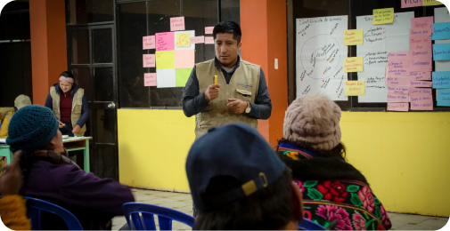

Consultoría:
Se encuentra enfocado en fortalecer la gestión social y ambiental, con profesionales especializados y con metodologías participativas de acuerdo a los estándares internacionales.
Gestión de relacionamiento comunitario, responsabilidad social y sostenibilidad:
- Mapeo y caracterización de actores.
- Mapeo de riesgos y espacios de participación.
- Análisis sociopolítico del entorno.
- Licencia social y negociación de tierras superficiales.
- Elaboración de línea de base y diagnósticos participativos.
- Plan de Relaciones Comunitarias.
- Plan de Participación Ciudadana.
- Alianzas estratégicas, convenios y acuerdos.
- Sistema, redes y reportes de alerta temprana en conflictos.
- Gestión de crisis, facilitación de mesas de diálogo y negociación.
- Elaboración de reportes de sostenibilidad.
Gestión del turismo comunitario y desarrollo rural:
- Plan de Desarrollo Turístico Local.
- Diagnósticos para evaluar el potencial turístico.
- Inventario de recursos turísticos.
- Guiones de interpretación turística.
- Diseño de productos turísticos.
- Fortalecimiento de la cultura turística.
Planificación territorial, permisos e iniciativas de desarrollo:
- Plan de Desarrollo Concertado.
- Planes de Vida.
- Planes Maestros.
- Planes de Protección de PIACI.
- Planes de gestión integrada de recursos hídricos.
- Monitoreo y evaluación de proyectos sociales.
- Desarrollo de pasantías e intercambio de experiencias exitosas.
- CIRAS.
- Planes de monitoreo arqueológico.
- Estudios socioeconómicos para cadenas de suministros.
Gestión ambiental
- Estudios de Impacto Ambiental.
- Educación ambiental.
- Estudios sobre biodiversidad de flora y fauna.
- Participación ciudadana en mecanismos de retribución por servicios ecosistémicos.
- Medidas de adaptación al cambio climático.
- Mapeo de actores en gestión de cuencas.
- Facilitación de consejos de recursos hídricos de cuenca.
- Monitoreo ambiental participativo.